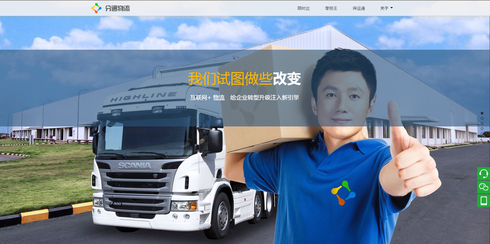
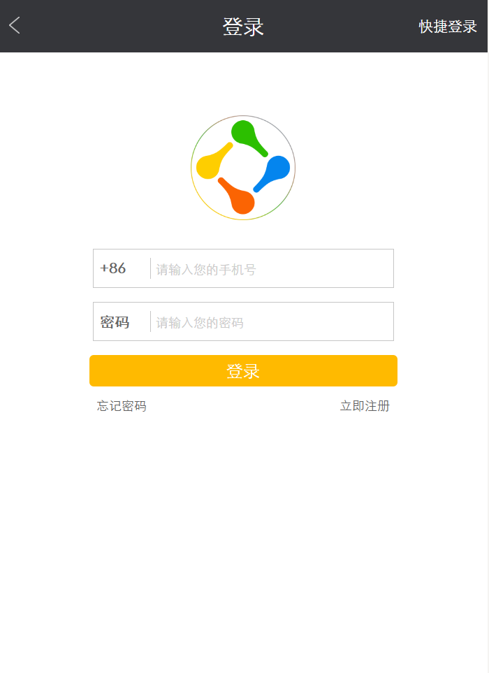

-
- Basic info. 基本信息
- 个人信息: 代一鸣 / 女 / 22岁
- 籍贯: 辽宁省 / 锦州市
- 教育经历: 中央广播电视大学
- GitHub: www.github.com/daiym
-
- Experience. 项目与工作经验
北京分通物流公司（2016/3——2016/9）
-
分通物流官网
http://www.sudichina.com/
此官网主要使用fullpage全屏滚动来操作，其中包括jquery显示与隐藏，移入移出等事件，以及简单使用move.js的小动画操作。
页面具有良好的兼容性，此网站兼容各种浏览器以及手机端的观看，完全还原设计稿，也对盒子模型、浮动布局深入了解。
 -
分通物流微信端
微信端主要使用相对单位rem来呈现效果，用媒体查询来控制html的值来适配各种型号手机，其中首页使用了jquery侧滑，双日历等操作。登陆、注册等效验主要使用了正则表达式，以及简单的Ajax交互。

-
- 专业技能
Web前端
-
HTML / CSS
1 精通HTML5、CSS3，代码符合W3C标准、具有良好的执行性能和抽象易扩展性，兼容主流浏览器
2 使用jQuery和Backbone等框架
3 对移动开发有一定的涉入
4 熟练快速完成切图
5 代码语义化，懂优化、搜索引擎等
-
jQuery
1 操作文档对象、选择DOM元素、制作动画效果、事件处理以及其他功能
2 熟悉jQuery的表单验证，Ajax和后端的交互数据的呈现
-
Javascript
1 了解Javascript、DOM、BOM、等基础
2 对JavaScript性能优化、解决多浏览器兼容性问题有一定的了解
其他
-
是一个比较有趣的人，有着浓重的幽默东北人的气息，可以把这种轻松快乐感染给身边的人。
有点小小的强迫症，大概是处女座的原因吧，难以忍受一个小像素、小色差的偏差！
学习能力较强，以上绝大多数的技能都是自学修得的